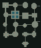
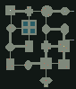
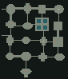

LONEMOORE · FIRST PLAYABLE EXPANSION · SEPTEMBER 17, 2026The expanded Cistern
Approved and implemented across all eighteen floors. Open the current campaign and gothic stair gallery. The images below document the earlier prototype.
Atmosphere revision: the miniature arches are removed, ceilings are lower, chambers have more furnishings, and a warm player light follows you. See the before/after comparison. Choose Continue in the launcher to use your existing save.
13.4×walkable area in reviewed seed
10×regular enemies
100distinct tested layouts
2 sealskey gate, then boss gate
Start Play Expanded Dungeon Prototype.cmd in the project folder. Choose a random layout, continue your prototype save, or choose the reviewed seed. The prototype has its own Windows package and save slots.
Packaged game views
What to try
Find the rusted key and the optional lever vault. Cross the reservoir, investigate the secret treasury, defeat the Rat King, and open the final stair seal. Visit town for supplies and return through an activated waypoint.
W/S move · A/D turn · E interact · M map · F5/F9 save/load · T town. The map has zoom, pan, markers, and Fit floor. Bright terrain is visible now, dim terrain is remembered, and black space is unexplored.
The review party is a level-three warrior, mage and cleric with ordinary stats. The full-clear automated route walked 1,025 steps, won all 21 fights, visited both optional vaults, and descended using the key and boss seals.
Compare three actual generated floor plans — contains spoilers
Different room shapes and connections. Blue: reservoir gaps. Red: enemies. Gold: key and stairs. White: start. These diagrams expose the whole layout for review; the playable map starts concealed.

Seed 178248
Seed 282977
Seed 73519Prototype record
This approved prototype retains grid movement while allowing larger architecture, variable wall spans and ceiling heights. Fire pits, more cavern treatments and the campaign-wide rollout are included in the current campaign gallery linked above.
Play instructions and implementation notes · Validation and preservation evidence
Game captures use a save-disabled camera fixture. The fully explored comparison is intentionally a review view. Automated playability checks are evidence of functional routes, not a substitute for your playtest.